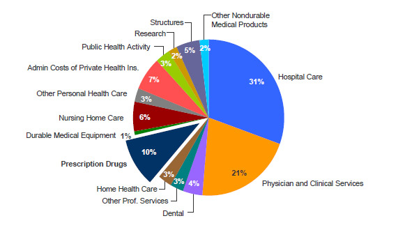

The best mortgage rates in Canada right now
Think about your financial goals
Saving and investing can help you reach your financial goals. Writing goals down is a good idea.
Save and invest for the short term
If you're saving for an emergency fund or a major purchase within a year or two, your focus will be on building your savings. You'll want to keep your money protected and easily accessible. Keep in mind that some investments are complex and can be risky. Talk to an investment professional or financial advisor to find the investment that is right for you.
Figure out your comfort with risk
Many investments offer the potential for a higher rate of return but also involve some level of risk. However, the risk may be more acceptable if your goal is longer-term because you have more time to recover any financial losses. Your comfort with risk depends on your emotional willingness to accept risk and your financial ability to absorb loss. This is known as your risk tolerance or risk appetite.
Health insurance helps you pay for medical care. Provincial and territorial health plans in Canada cover most of your health care needs. Some workplace health care plans may cover services that your provincial or territorial health care plan doesn't cover.
